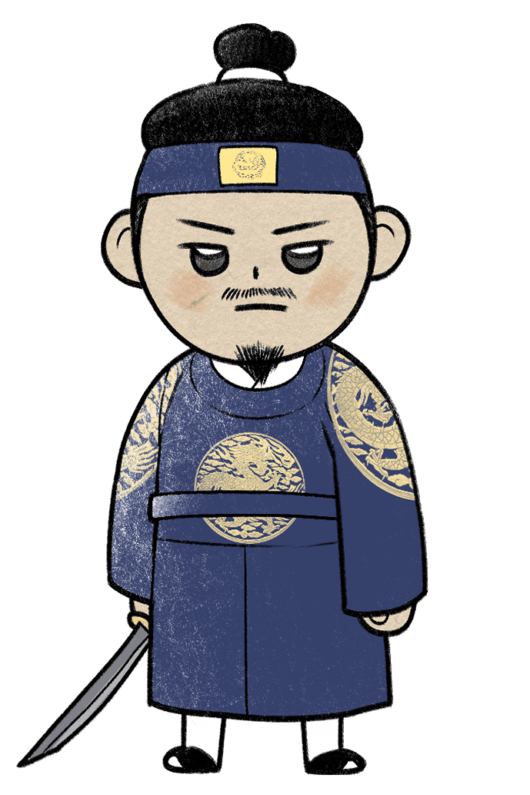
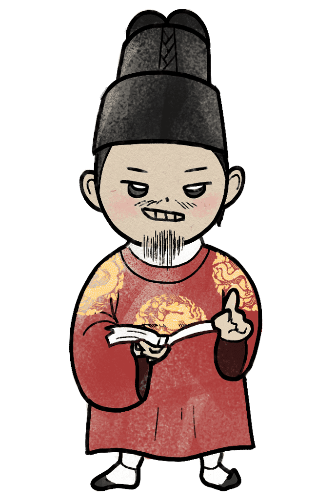

성품 유형지
포은 정몽주
"소중한 이들은 절대 지켜! 수호자"

당신은 고려왕조에 대한 충성심이 그 누구보다 강했으며 명석한 두뇌로 여러 난제를 똑똑하게 해결한 정몽주와 비슷합니다.
정몽주가 고려를 지키겠다는 굳은 결심을 죽는 그 순간까지 놓지 않았던 것처럼 당신도 전통과 관습에 충직해 그것을 잘 지킵니다. 즉, 기존에 있던 규칙과 제도들을 지키는 것을
중시하며 안정성을 지향합니다.
또한 정몽주가 맡은 일은 끝까지 책임을 다한 것처럼 당신 또한 업무에 큰 책임감을 가지고 꾸준히 노력하는 편입니다.
뿐만 아니라 당신은 양심적인 편으로, 무언가를 받았을 때는 몇 배로 베풀어주는 성격으로 열정과 자애로움을 두루 갖춘 사람이며 동정심이 많아 사람들을 어려움으로부터 보호하려고
하는데, 이러한 노력을 과시하지 않고 겸손하게 임하는 편입니다.
이는 정몽주가 자신의 가치를 지키고자 노력하며 백성들에게 애민정신이 강했던 것과 유사한 부분입니다. 덧붙여 당신은 사람이나 일에 관해 세부사항을 잘 기억해 일을 깔끔하게 처리는
편입니다.
다음
성품 유형지
① 눈치백단 신동
정몽주가 아홉 살 때, 그의 여종의 남편이 전쟁터에 나갔습니다. 그녀는 남편이 무척 걱정되고 보고 싶었지만 자신의 애타는 마음을 전할 길이 없어 고민하던 중 주인집 도련님인 정몽주에게 '편지 한 통을 대신 써주세요.' 라고 부탁을 했다고 합니다. 글을 모르는 여종의 입장을 이해한 그는 아주 짤막한 편지를 써줬는데, 바로 '첩심불이'라는 문장으로 '당신을 기다리는 저의 마음은 어느 곳으로도 옮겨가지 않습니다.'라는 뜻이었다고 합니다. 이후 겨우 아홉 살 남짓의 어린아이가 어른의 마음을 정확히 읽어 그토록 간결하고도 명료한 표현을 한 것에 모두가 경탄했다고 합니다.② 완벽한 일처리
정몽주는 책임감이 매우 강한 사람으로 전해집니다. 그가 처음으로 명나라에 사절로 파견되었을 당시 고려로 귀국하는 길에 난파당하여 10여 일을 표류한 적이 있습니다. 이 소식을 들은 명나라 임금이 사람을 보내어 덕분에 목숨을 건졌는데, 놀라운 것은 그가 그러한 조난 사고를 겪고도 끝까지 사신으로서의 책무를 다해 명나라 임금과 주변 신하들이 감탄했다는 점입니다. 이후 다시 명나라 사절로 떠날 때에도 시간이 촉박함에도 필사적인 강행군 끝에 기한에 맞춰 도착하는 등 과거 조난의 기억이 있음에도 약속을 지키기 위해 노력하며 또다시 사절로서 갔다는 점에서 성실하고 책임감 있게 본분을 다하는 그의 성격이 드러납니다.③ 선망 받은 충신
정몽주는 당시에 박신이라는 관리는 백성들이 무기의 병화를 입지 않고 편안히 먹고 자는 것이 모두 정몽주의 공적이라고 말할 정도로 그는 주변인들에게 칭송받았다고 합니다. 고려 왕조였을 당시 그는 왜구에게 노비로 혹사당하는 고려 양민들을 구출하기 위해 자신의 재산을 내어놓고 다른 대신들을 설득하여 그들을 고려로 데리고 오기도 했습니다. 정몽주의 이런 노력에 감탄한 일본 영주는 그때마다 고려인 포로를 백여 명씩 돌려 보내주었는데, 역사적으로 양민구출에 이렇게 노력을 기울인 관리가 상당히 드물었다는 것을 볼 때, 사재까지 내어가면서 그들을 구출한 점은 실로 높이 평가해야 할 부분입니다.
위인소개
정몽주는 고려 후기의 문신이자 학자로 기울어가는 고려 정세를 일으키기 위해 국가 기강 정비와 민생 안정에 힘을 쏟았으며 외교관으로서 큰 활약을 했습니다.
정몽주는 어려서부터 학문에 흥미가 많아 학문 정진을 게을리 하지 않았고 성리학에 대한 조예가 깊었을 뿐만 아니라, 이성계와 함께 왜구를 토벌함으로써 큰 공을 세운
인물로 글자 그대로 문무를 겸비한 인물이었습니다.
그의 시조 ’단심가‘는 고려에 대한 정몽주의 충절을 대변하는 작품으로 후세에까지 회자되고 있을 만큼 예술적 감각도 있었다고 전해집니다.
정치적으로도 정몽주는 청렴하고 양심적인 정치인이었다고 평가받고 있어 다방면으로 우수한 인물로 전해집니다.

천생연분
태종 이방원

견원지간
영조
태종 이방원 : 서로의 존재와 가치를 인정하는 최상의 궁합입니다. 하지만 서로의 신념이 다르다면 자웅을
겨루어야 할지도 모릅니다.
영조 : 관계를 놓을 때까지 계속해서 충돌하는 최악의 궁합입니다. 하지만 마음을 비운다면 오히려 편안해
질 수 있습니다.
이전